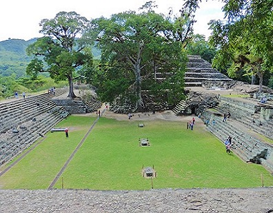
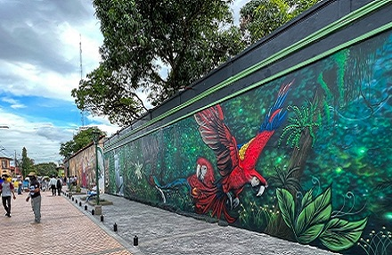

Honduras como atractivo turístico posee muchos puntos de interés, dentro de los que se encuentran yacimientos arqueológicos Mayas y de otras culturas de Honduras, un turismo costero compuesto por 820 km, un turismo marítimo e insular en los archipiélagos en mar Caribe Cayos Zapotillos, Islas de la Bahía, Cayos Cochinos y Cayos Misquitos, además de su Islas del Golfo, un turismo de naturaleza.
Estos son todos los lugares turisticos que tiene honduras, tiene muchas variedades como son:
Roatan tiene una de las playas naturales mas hermosas de Honduras, tambien hay que mencionar que es una de las playas mas queridas por los turistas, por sus aresifes y cabe mencionar que roatan esta en el top 3 de los aresifes mas grandes y hermosos del mundo.
Las Mejores Playas de islas de la Bahia:
Puerto Cortés, conocida cariñosamente como «La Ciudad del Mar», es un rincón pintoresco de Honduras que combina el encanto de la costa caribeña con una rica herencia histórica. En este artículo, te llevaremos a través de diez lugares y experiencias que hacen de Puerto Cortés un destino único en Honduras. Desde sus playas doradas hasta su deliciosa comida local, hay algo para todos los gustos
La Playa de Cienaguita es una de las más populares en Puerto Cortés, Honduras, y es conocida por su arena blanca y aguas cristalinas. Este lugar es ideal para quienes buscan relajarse bajo el sol, nadar en aguas tranquilas o practicar deportes acuáticos como el snorkel y el kayak. La playa está rodeada de palmeras y vegetación tropical, creando un ambiente paradisíaco
La Playa de Miami, ubicada en la costa caribeña de Tela, es conocida por su arena blanca y aguas cristalinas, lo que la convierte en uno de los lugares más atractivos para los turistas. Esta playa es perfecta para nadar, tomar el sol y practicar deportes acuáticos como el kayak y el paddleboarding.
Las palmeras que bordean la playa ofrecen sombra y crean un paisaje tropical idílico. Además, la Playa de Miami cuenta con varios restaurantes y bares que sirven deliciosos mariscos frescos y bebidas refrescantes, proporcionando el lugar perfecto para relajarse después de un día en el agua. Las puestas de sol en esta playa son espectaculares, pintando el cielo con tonos de naranja, rosa y púrpura, y ofreciendo un final perfecto para un día de relajación y diversión.
Utila tambie tiene una de las mejores playas naturales de Honduras, estas son agunas playas:
En Honduras tambien hay lugares turisticos naturales como lo son:
Este departamento cuenta con los rios naturales mas lindos de honduras y tiene unas vistas hermosas que las puedes ver desde la cima de las mostañas y en el transcurso del camino podras ver variedad de fauna y muchas especises de animales.
San Luis tambien tiene uno de los rios mas hermosos de Honduras y una de las cascadas naturales mas hermosas del pais, tambien es hermoso por su culura su gente y por las vistas increibales que tiene.
Honduras tambien es conocido por sus antiguas sitios mayas que en los ultimos años se vuelto una de las mayores atracciones turisticas, estos son algunos lugares donde pueden visitar:
Copán es un sitio arqueológico de la antigua civilización maya ubicado en el departamento de Copán al occidente de Honduras. Del siglo V al siglo IX fue la capital de un importante reino del periodo Clásico.
Aunque las primeras estructuras arquitectónicas de piedra construidas en Copán datan del siglo IX a. C., el valle fértil del río Copán ya fue una región agrícola mucho antes. La ciudad ya era importante antes de su refundación por una élite Extranjera.Copán tuvo gran influencia sobre los centros regionales en todo el oeste y centro de Honduras, impulsando la introducción de características mesoamericanas en las élites locales.
La ciudad atrae turistas con interés histórico y arqueológico a sus museos y sitios históricos durante todo el año, pero también atrae mucho turismo religioso y peregrinaje, en particular durante la Semana Santa.
Comayagua es una joya histórica y la columna de la Constitución es un monumento impresionante para conocer la historia... es una iglesia de indios, la historia nos remite a ese maravilloso pasado de la cultura lenca de la zona, visitas esa... El Palacio Episcopal se conoce también como La Casa Cural.
La mas fuerte atraccion de turistas en omoa es la historica FORTALEZA DE SAN FERNADO Ubicada en Omoa, en la costa norte, esta enorme estructura de piedra ha permanecido en el país prácticamente durante tres siglos. En un principio, la fortaleza fue construida para proteger la costa de los piratas, quienes atacaban la región con barcos que cargaban plata con rumbo a España.